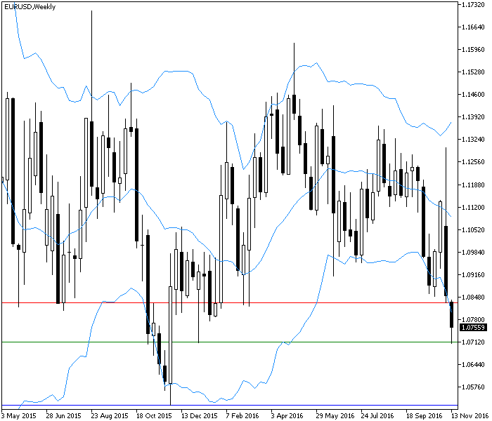

<!DOCTYPE html>
<html>
</html>
<head>
  <meta charset="utf-8">
  <meta http-equiv="X-UA-Compatible" content="IE=edge">
  <title>外汇站（fx-z.com） - 头寸规模管理的主流技术</title>
  <meta name="description" content="">
  <meta name="viewport" content="width=device-width, initial-scale=1">
  <meta name="robots" content="all,follow">
  <!-- Bootstrap CSS-->
  <link rel="stylesheet" href="vendor/bootstrap/css/bootstrap.min.css">
  <!-- Font Awesome CSS-->
  <link rel="stylesheet" href="vendor/font-awesome/css/font-awesome.min.css">
  <!-- Google fonts - Roboto-->
  <link rel="stylesheet" href="https://fonts.googleapis.com/css?family=Roboto:400,300,700,400italic">
  <!-- owl carousel-->
  <link rel="stylesheet" href="vendor/owl.carousel/assets/owl.carousel.css">
  <link rel="stylesheet" href="vendor/owl.carousel/assets/owl.theme.default.css">
  <!-- theme stylesheet-->
  <link rel="stylesheet" href="css/style.default.css" id="theme-stylesheet">
  <!-- Custom stylesheet - for your changes-->
  <link rel="stylesheet" href="css/custom.css">
  <!-- Favicon-->
  <link rel="shortcut icon" href="img/favicon.png">
  <!-- Tweaks for older IEs--><!--[if lt IE 9]>
    <script src="https://oss.maxcdn.com/html5shiv/3.7.3/html5shiv.min.js"></script>
    <script src="https://oss.maxcdn.com/respond/1.4.2/respond.min.js"></script><![endif]-->
</head>
<body>
  <div id="all">
    <div class="container-fluid">
      <div class="row row-offcanvas row-offcanvas-left"> 
        <!--   *** SIDEBAR ***-->
        <div id="sidebar" class="col-md-4 col-lg-3 sidebar-offcanvas">
          <div class="sidebar-content">
            <h1 class="sidebar-heading"> <a href="https://fx-z.com">fx-z.com</a></h1>
            <p class="sidebar-p">介绍外汇相关的基本知识，告诉您如何进行自己的技术面和基本面分析，讲解先进的交易理念，并且为您阐述失败交易者与专业交易者之间的真正区别。 </p>
            <p class="sidebar-p">通过这些课程的学习，您将学会如何根据自己的优势来应用情绪分析，还将了解真实世界的事件会对货币汇率产生什么影响，央行在外汇市场中所发挥的作用，以及交易者在颇受欢迎的即期外汇交易中有哪些选择方案。 </p>
            <ul class="sidebar-menu">
                <!-- Link-->
                <li class="sidebar-item"><a href="https://fx-z.com" class="sidebar-link">首页</a></li>
                <!-- Link-->
                <li class="sidebar-item"><a href="cihui.html" class="sidebar-link">外汇词汇</a></li>
                <!-- Link-->
                <li class="sidebar-item"><a href="ebook.html" class="sidebar-link">获取外汇电子书</a></li>
            </ul>
            <p class="social"><a href="https://www.cn-forextime.com/zh?partner_id=4920383" target="_blank"data-animate-hover="pulse" class="external facebook"><i class="fa fa-eur"></i></a><a href="https://www.cn-forextime.com/zh?partner_id=4920383" target="_blank" data-animate-hover="pulse" class="external gplus"><i class="fa fa-gbp"></i></a><a href="https://www.cn-forextime.com/zh?partner_id=4920383" target="_blank" data-animate-hover="pulse" class="external twitter"><i class="fa fa-rmb"></i></a><a href="https://www.cn-forextime.com/zh?partner_id=4920383" target="_blank" title="" class="external instagram"><i class="fa fa-dollar"></i></a><a href="https://www.cn-forextime.com/zh?partner_id=4920383" target="_blank" data-animate-hover="pulse" class="email"><i class="fa fa-money"></i></a></p>
            <div class="copyright text-center text-md-left">
             
              
            </div>
          </div>
        </div>
        <!--   *** SIDEBAR END ***  -->
        <!--   *** DETAIL ***-->
        <div class="col-md-8 col-lg-9 content-column white-background">
          <div class="small-navbar d-flex d-md-none">
            <button type="button" data-toggle="offcanvas" class="btn btn-outline-primary"> <i class="fa fa-align-left mr-2"></i>菜单</button>
            <h1 class="small-navbar-heading"> <a href="https://fx-z.com/17-6.html">下一篇 </a></h1>
          </div>
          <div class="row">
            <div class="col-xl-10">
              <div class="content-column-content">
                <h1>头寸规模管理的主流技术</h1>
  <p>
    以前的课程提出，如果您遵循数学家的模型，那么您只有一种设置头寸规模的最佳方式。但实际上，交易者还利用许多其他方法来设置头寸。首先是由海龟交易者实验（Turtle Trader ）的经理发明的 2% 法则；该法则力求证明，如果任何一笔交易都能得到足够多的工具（包括 2% 资金限额），任何人都可以学会交易和成功交易。数学上可以轻松证明，为每笔交易最高分配 2% 的风险允许您承受一系列初始及持续亏损，而且，如果交易系统的赢率高于 1:1，这些亏损将得到恢复。
</p>
<p>
    2% 法则的问题在于，正如许多外汇交易者一样，如果您的初始本金非常低，您可以只交易一些迷你手或微型手，但需要花费非常久的时间来建立规模较大的资金基础。Alexander Elder 制定了另一项同样适合该论点的 6% 法则。违背 2% 法则的问题在于，您将变得急躁、贪婪，而且可能亏损全部本金，因而不得不重新存钱才能重新开始。
</p>
<p>
    管理头寸规模的第一步始终是确定您能够负担的亏损资金，无论该资金是美元金额还是总本金中的比例。从逻辑上讲，这意味着您必须找到不会被触及的止损点，并衡量当时可用的入场价位或者将带来最大收益的理想入场价位。例如，您正在研究以下图表。EUR/USD 已突破一条次要支撑位。您想在当前位置卖空，而且您的止损位将被设置在支撑转阻力位（红线） 1.0830 或者与当前卖出价 1.0757 相距 73 点的价位。您愿意为这笔交易承担 $500 的亏损，因此这可以轻松计算为，您可以交易约 0.68 手（$500 除以止损距离，然后除以点值价值）。请注意，我们这次也不考虑盈利潜力。盈利可能只有 45 点（到达 1.0712 绿色支撑线时），但如果到达前一个低点 1.0521 或 236 点，盈利可能更多。
</p>
<p>
     EUR/USD 下穿支撑线（红色），且有潜力到达最近的支撑位（绿色）或者长期低点（蓝色）
</p>
<p>
    请不要为了获得更多的合约而考虑将支撑位下移到无法触及的位置。止损位的重要之处在于它们的安全保障。您希望它们不被触及，正如您拥有火灾保险，却不希望房子着火。若是擅自修改“允许”的止损位，而不是采用计算值来交易一两份完整合约，这本身就是一种自我欺骗的行为。您可以选择布林线底部作为止损位，它只有 43 点，而且能够交易更多合约（1.16 手）。但 43 点很容易被一周内的噪音活动触及，因而并不是一个很好的止损点。的确，您将交易完整的 1 手，因此，如果价格未突破 B 线底部并且未跌至前一个低点，则您的收益较为可观——但这依然是错误的做法。请根据可能的最糟糕的情况来设置止损位和头寸规模。
</p>
<p>
    比如说，这次交易（0.68 手）确实导致了亏损。现在怎么办？海龟仍然有效：当您的账户亏损 10% 时，冒着亏损 20% 的风险削减您的总资金。如果您账户中的欧元交易额高于 $5,000，而且您能承受的最大亏损为 $500，占本金的 10%，则您大概剩余 $4,500，而且下一个止损位应该相应地减少，或者设为 80% x $500 = $400。
</p>
<p>
    另一种更为复杂的管理头寸规模的方法是通过波动率大小来管理。这种方法非常合理、恰当，虽然外汇波动率瞬息万变，让您必须不断地更新数据。鉴于初始本金和风险资金在交易中所占的比例（即止损位中的点数/美元金额），核心原则是根据货币波动率来管理头寸规模。您可以任意预测波动率，但标准算法是将平均真实波动范围（ATR）换算为美元：
</p>
<p>
    头寸规模 = （本金 × 风险资金的百分比）/ ATR
</p>
<p>
    这可以简化为：
</p>
<p>
    头寸规模 = 美元止损位 / ATR
</p>
<p>
    幸运的是，我们很容易从大多数数据提供商和平台处获得 ATR。在欧元案例中，W1（周线图）上的当前 ATR 为 186 点。因此：
</p>
<p>
    头寸规模 = $730 / $1,860 = 0.39
</p>
<p>
    如您所见，经过波动率调整后的头寸规模几乎低至由任意 2% 风险法则选择的资金的一半。有些情况中可能会出现相反的情况——波动率大小将超过初始的 2% 法则。如果您采用合理的波动率衡量方法，而且波动率比较稳定，那么您可以放弃该法则，但应该注意的是，您可能会对风险资金过度交易。
</p>
<p>
    <br/>
</p>
<p>
    <br/>
</p>
              </div>
            </div>
          </div>
        </div>
      </div>
    </div>
  </div>
  <!-- JavaScript files-->
  <script src="vendor/jquery/jquery.min.js"></script>
  <script src="vendor/popper.js/umd/popper.min.js"> </script>
  <script src="vendor/bootstrap/js/bootstrap.min.js"></script>
  <script src="vendor/jquery.cookie/jquery.cookie.js"> </script>
  <script src="vendor/owl.carousel/owl.carousel.min.js"></script>
  <script src="vendor/masonry-layout/masonry.pkgd.min.js"></script>
  <script src="js/front.js"></script>
</body>